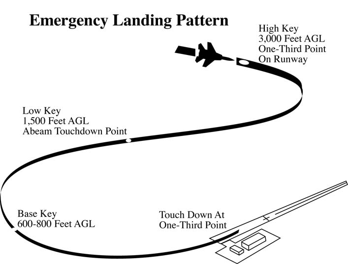
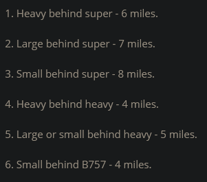
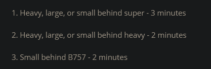

Disclaimer: This page is not meant to look pretty, but is meant to be functional. This page is also limited by my own knowledge and anything i have learned in any vZID, vZHU, or vZME ARTCC documents. If you find any issues with spelling, or logic, or something that is simply incorrect, let Stephen Welsh know either via the Github Issues page, or Discord.
Github Issues page
Disclaimer 2: This document is presented as a suppliment to official ZID documents, but is not a replacement to said documents.
Want to see this page in use? Come watch Stephen's stream during ATC streams https://www.twitch.tv/stw222
Table of Contents
------------------------------ Templates ------------------------------
Destination ICAO
Cruise for direction of flight (and equipment code/aircraft type when high in FL)
Aircraft type and Temporary Flight altitude. Usually 030 for props, 050 for jets.
Equipment code
Route Validity (does it make sense and conform to LOAs)
Assign a runway
Assign a Squawkx
Wx = Altimeter or current ATIS letter
RB = X for verbal, P for PDC
RWY = runway they will take off from
h and s = Heading and speed for radar controllers, RW for runway heading or a compass dicrection
h slot is also used for the first fix on an RNAV
Templates
Delivery - VFR
*************** Delivery - IFR ***************
IFR
Aircraft Callsign
C Cleared to (Destination
R via Radar Vectors (VOR/FIX
A Maintain (Initial Alt ),
Expect Flight Level (###
F Departure Frequency (###.## (Departure offline if no radar or center online)
T Squawk ####
Wait for READBACK
(Aircraft Callsign
Advise ready to taxi golding short of (point / taxiway), with (ATIS letter)
Expect Runway (x)
Templates
Delivery - VFR
*************** Delivery - IFR SID with radar (APP/DEP online) ***************
SID w/ radar
Aircraft Callsign
C Cleared to (Destination
R via the ABCDE3 Departure , ZYXWV transition , then as filed,
A Maintain (Initial Alt ),
Expect Flight Level (###
F Departure Frequency (###.##
T Squawk ####
Wait for READBACK
(Aircraft Callsign
Advise ready to taxi golding short of (point / taxiway), with (ATIS letter)
Expect Runway (x)
Templates
Delivery - VFR
*************** Delivery - VFR ***************
VFR
Maintain VFR at or below (Altitude (025 for props 045 for jets initially)
F Departure Frequency (###.##
T Squawk ####
Wait for READBACK
(Aircraft Callsign
Advise ready to taxi golding short of (point / taxiway), with (ATIS letter)
Expect Runway (x)
SVFR - 1SM vis, stay out of the clouds
Cleared out of the (airport) class (class). fly (Direction) of (airport) airport at or below (alt below 10k)
Pattern work
Aircraft Callsign
VFR pattern work approved
Squawk if applicable
Advise ready to taxi
Templates
Delivery - VFR
*************** Ground Taxi ***************
Taxi
(Aircraft Callsign
Runway (RWY
* Make use of "Hold short runway X X *
* Remember to ask controllers above for active runway crossings *
* Remember to inform above controllers of completed runway crossings *
* Remember to tell an aircraft to contact an above controller and send the aircraft's strip *
* Remember to check if aircraft are squawking mode C and correct code *
*************** Tower Templates ***************
Tower
Rnav Departure
RNAV to (Fix), Runway (Number), Cleared for Takeoff, Wind 123@12
Non-RNAV Departure
Fly Runway Heading (Or other heading), Runway (Number), Cleared for Takeoff, Wind 123@12
Aircraft Departed
(Callsign), Contact (something) Departure, (Optional Frequency)
Landing
(Callsign), Cleared to land (number in sequence), Wind 123@12
Can include Number in the approach line or aircraft departing before arrival
Circling approach
"Circle (cardinal direction) of (runway or airport) for (left / right ) (base / downwind) for (runway)"
Pattern work
"(Callsign), you are following a (aircraft type) (Part of the pattern), report in sight"
"traffic off your nose"
"traffic off your right wing"
"Maintain visual seperation from the (aircraft type), Runway # cleared to land number #, Wind 123@12"
Ask for flight following if leaving the pattern
Give a squawk when departing the pattern if they dont already have one
Helicopters
"Departure from the ramp at your own risk"
"Report landing assured"
Airtaxi direct
Hovertaxi via (Taxiway)
Go Around
"Climb and maintain 3000, fly runway heading"
"Contact departure on (Freq)"
Circling Approach
Circle to runway (Number)
Circle (Direction using cardinal directions) of the airport/runway for a left/right base/downwind to runway (number)
Military
Military
Takeoff
For intersection departures, include runway remaining
Overhead Break
"Report Initial" (This means on approach)
"Report break, (Right or left), (Where to break)" when they report initial
Clear for the option after reporting break
*Break points are approach end, midfield, departure end*
Unrestricted Climb
Unrestricted Climb to (Altitude) approved. Cleared for takeoff. Change to departure
Coordinate departure with departure controller
High Key Departure
High Key Departure approved. (Restrictions). Make (Left or right) Closed Traffic. Report High Key. Cleared for takeoff.
*Coordinate high key departures that exit local's area with departure*
Report (Some Point) or Remain at or (Below or above). Remain within X DME.

Carrier Break
Report initial (Runway) [[Optional:]] Expect a (Right) break *Default is left break*
Initial: Carrier Break approved *If not issued and not left: Right carrier break approved*
Check gear down, (Wind), runway (runnway) cleared to land
Landing
Check Gear down, Runway (Number) Cleared for the option / Cleared to land
More info:
LINK
Terms
ANGELS - thousands of feet
BINGO - Emergency Fuel situation
BRC - Ship/runway magnetic heading (Base Recovery Course)
CATCC - Carrier Air Traffic Control Center
CLEAN UP - raise hear, flaps, hook
DIRTY UP - lower gear, flaps, hook
PIGEONS - breaing and distance to an object "PIGEONS 270 for 34" (270 degrees, 34 miles)
POPEYE - Aircraft in IMC. Ex: "OPOEYE ANGELS 18"
SWEET LOCK SWEET COMMS - locked onto nav beacon w/ radio coms with the specified facility.
*************** Approach Info ***************
Approach
GPS approach
"Cleared Direct (WPT), Cross (WPT) at (ALT), Cleared Rnav GPS X approach"
*GPS approach; cleared strait in to prevent procedure turn*
LOC Approach
"(X) Miles from (WPT), Turn (DIR) Heading (HDG), Maintain (ALT) until Established, Cleared LOC approach RWY (X)"
VOR Approach
*Vector to the VOR with the usual 30 degree or less intercept*
"Maintain (ALT) until established, Cleared VOR (x) approach"
VECTOR
"Vector to (FIX) / Intercept ___ Radial / Final Approach Course / for Spacing"
CLIMBS and DECENTS
"Climb / Decend and maintain"
"Cross (FIX) at (At or above / below)"
"Cross (Miles) Miles (Direction) of (Fix) at (ALT)"
"After Passing (Fix)"
"At (time) (time in hours, minutes, nearest quarter minute)"
"Climb / Decend to reach (ALT) at (time)" ***Issue time check***
"Maintain (ALT) until (time **TIME CHECK**, fix, waypoint ) then Climb / Decend and maintain (ALT)"
"Descend via (STAR) ______ Transition"
"Change transition to (runway number)""
"Turn Left/Right (Or a heading). Vectors to Final approach course"
SPEEDS
Maintain Present / specific speed "Maintain present speed"
Maintain Specified speed or greater/less "Maintain (Speed) knots or greater"
Maintain Highest / lowest Practical speed "Maintain Maximum forward (or Slowest Practical) speed"
Increase or reduce to a specified speed or by a specified number of knots "Increase speed to (Speed) Knots
POP-UP IFR
Treat aircraft as VFR for initial part of flight.
"Cleared to (Airport) as filed Squawk (code)"
"(Callsign), Are you able to maintain your own terrain and Obstruction clearance until reaching (MVA/MIA/MEA)?" Minimum Vectoring ALT, Minimum IFR Alt, Minimum Enroute Alt.
HOLDS
Holding Fix
Direction of Hold
Radial / Course / Track / Bearing
Leg Length in miles or minutes
Direction of hold (Default to right turns)
Expect Further Clearance Time
"Cleared to (Fix to hold at)"
Published - "HOLD (direction) OF (fix) AS PUBLISHED. MAINTAIN (Altitude) EXPECT FURTHER CLEARANCE (Zulu Time)"
Non Published - "(Callsign), Cleared to (fix), hold (direction) on the (XXX) radial, (XX) minute/mile legs, (OPTIONAL: Left/Right Turns), maintain (altitude), expect further clearance (time)."
"Cleared to (Airport) via last cleared routing"
"Cleared to (Airport) via cross (fix) at/below/above (ALT)"
minimum for a hold, where to hold, what altitude, expect further clearance time
APREQ
Approval Request
Ask a controller for something
Request:
Control Action
Higher / Lower
Control
APPROACH CLEARANCE
PTAC - (P)osition (T)urn (A)ltitude (C)learance
"You are __ Miles from (FIX), Turn Left/Right heading (HDG), Maintain (ALT) until established, Cleared (APP) runway (RWY)"
CONTACT APPROACH
(DONT suggest this approach to pilots)
"Cleared Contact approach" (if req) "at or below (alt)"
boldmethod.com/learn-to-fly/navigation/what-is-a-contact-approach-and-how-do-you-fly-it/
UNCONTROLLED FIELDS
"Cleared From (Airport), to (Airport) via (route) (or as filed), Maintain (Initial), expect (final) (heading if needed), Departure "With me", Squawk (Code), Hold for Release, Call number one for the runway"
"Advise what your departure runway and how long until you depart"
"Released for departure, Clearance Void if not off by (time (In 10 min)). Time now (Time)."
"If not off by (Void time), Advise (Freq or "This freq") Not later than (Time (in 15 min)) of intentions"
VISUAL
"Report the airport in signt"
"Cleared visual approach to (airport name), Report IFR cancelation in the air or on the ground. Change to advisory freq approved"
INSTRUMENT
"Cleared (approach) runway (RWY). Report established"
Dont specify RWY for circling approaches
COMMUNICATION RELEASE
"Report Canecllation of IFR, in the air or on the ground, on (Freq (or "This frequency") Change to Advisory frequency approved"
If canceling in the air:
"IFR cancellation receieved, Squawk VFR, Change to advisory frequency approved"
FLIGHT FOLLOWING
FF Must be requested by the pilot
Upon leaving airspace boundary, FF should be canceled if radar handoff is not accepted
"Radar service terminated. For further flight following contact (Position) on (freq)"
RELEASE COORDINATION
Primary airport has automatic releases
Class D airports call for releases
"(Callsign) Released, (Heading), (Altitude)"
More Approach info
Is an aircraft is coasting for more than a few radar refreshes, drop the track and inform the aircraft of "Radar Contact Lost"
SEPERATION
1000 feet vertical speration
3 Miles lateral seperation (5 if a heavy in front)
No Vertical seperation when in descent
when visual seperation is being applied:
"____ has you in sight and will maintin visual seperation"
"Traffic ____ O-clock, (miles) Miles, (Direction) bound, (type) (Altitude)"
"Say Airspeed"
"Resume normal speed"
"Comply with speed restrictions"
"Resume published speed"
"Delete speed restrictions"
"Reduce speed to (knots) then, Descend and Maintain (ALT)"
"Descend and maintain (ALT) then, reduce speed to (Knots)"
Saftey Alerts
for when an aircraft is in unsafe proximity to terrain, obstructions, or aircraft
"Traffic Alert, advise you (Some action like Alt, speed, or DIR change), IMMEDIATELY"
"Traffic Alert, (callsign), Advise you (some action), Immediately"
"LOW Altitude Alert, (Callsign), Check your altitude"
"Low ALT alert, (Callsign), MVA in your area is __________"
HANDOFF
"Handoff, (where to look), (Callsign), Other info"
POINTOUT
"Point out, (where to look), (Callsign), (Alt), Other info"
"Traffic , direction, alt, other stuff"
"Traffic observed" - Sending controller sees traffic
"Pointout approved" - I dont need to deal with them
"Radar contact" - give me control
PRIMARY RADAR CONTACT:
POSITION
"5 miles West of DHP direct DHP" - position to a VOR as well as heading
If an aircraft is missing some information, and no other target is in the area, you can Radar ID them
TURNS
"10 miles west of saw mill at 3000"
"Turn 40 degrees right for radar ID" (Turn should be 30 degrees or more. more if a heading was not given in check in)
DEPARTURE
Observing departing aircraft target within 1 mile of takeoff end of runway at towered airport
dont state position information, just say "Radar Contact"
SECONDARY RADAR CONTACT
IDENT
BEACON CODE CHANGE
CHANGE OF MODE
"Squawk Standby" (Observe target change)
"Squawk Normal" (Observe target change)
VECTORS
Tell pilots why you vector them
Let them know if you vector through a localizer, airway, or radial they expect to use
Localizer:
30 degrees or less if greater than 2 miles from approach gate
Less than 20 degrees if less than 2 miles
45 degrees for helicopters
"Maintain Block (ALT) through (ALT)"
Minimum Enroute Altitudes (MEA) can be used as minimum altitudes if they are below MVAs as long as the aircraft will remain on its route
Dont issue speed restrictions to aircraft in a hold or aircraft inside the final approach fix
ODP = Opstacle Departure Procedure
APPROACH GATE
1 mile before the Final Approach Fix (FAF) and at least 5 miles from the landing threshold
Maximum intercept 2 miles from approach gate is 20 degrees
Max intercept outside of 2 miles of the gate is 30 degrees
Turbojet speeds:
Between FL280 and 10k: not less than 250kts
Below 10k: no less than 210. within 20 miles of destination: no less than 170 knots
Departure: not less than 230 knots
Turboprop speeds:
Below 10k: 200 knots, 150 within 20 miles
Departures: not less than 150 knots
Helicopters:
Not Less than 60 knots
Table of Contents
------------------------------ Controls ------------------------------
Controls
Function Commands
F1 <asel> Toggle full/partial data tag
F1 <sectorID> <asel> Pointout
F1 <sectorID> <enter> Tag up all aircraft owned by controller
Shift + F1 WAYPOINT <asel> Draw a line from aircraft to point
Shift + F1 <asel> remove ancor lines
F2 then airport identifier for weather box at the top of VRC
F3 <asel> Start Track on aircraft
F4 <asel> Drop Track
F4 <sectorID> <asel> Handoff to a controller
F4 /OK <asel> Force Drop Track
F5 <asel> change cruise
F6 <asel> Load flight plan in FP window
F6 <sectorID> <asel> Send flight strip to controller
Shift + F6 <asel> Draw aircraft's route on scope
CTRL + F6 <asel> Draw aircraft's route and show waypoints
F7 <ICAO> <enter> request metar and put in weather panel
F7 <asel> Metar for destination airport
F8 <ALT> <asel> to change temp altitude
F8 <asel> remove temp alt
F9 <asel> to assign random squak
F9 <nnnn> <asel> assign specific squak
F9 v | r | t <asel> to assign voice tag (when not put in by default by a flight plan)
INSERT text <asel> set scratchpad
INSERT <asel> Clear Scratchpad
CTRL + click on an aircraft to get aircraft flight plan
CTRL + ALT + click aircraft | Draw aircraft's filed route on scope
CTRL + up or down arrow to change text log size
CTRL + S silence conflict alert sound
CTRL + ALT + Numpad 1-9 - Saves current display center and soom as bookmark
CTRL + Numpad 1-9 recalls saved bookmark
ESC (in scope) clears command line if not empty, else clears radio selected aircraft.
ESC (in chat box) clears command line if not empty
Click on aircraft, then <asel> to start a count up timer.
It helps to know who called up first for clearance. press <asel> again to clear the timer
Home <asel> send contact request
Double click flight strip | equivalent to clicking on the aircraft
Alt Click flight strip to delete flight strip or seperator
ALT Click aircraft to add strip to the bay
Table of Contents
------------------------------ Commands ------------------------------
Commands
.wx or .metar <ICAO>
.transfer <sectorID> to handoff all targets to controller
.chat nobody - to test commands
.showstats - Use to show controlling stats from the current session. (Ctrl + up or down to resize text window)
.recv - are you able to copy voice?
.vis POINT - Set visibility center (Can also use double right click) .vis1 thru .vis4
.novis - remove visibility centers
.showvis - in the name
.wallop (msg) - tell supervisors about an unruly or NORDO pilot
.strip <asel> command instead of ALT + clicking on an aircraft
.acinfo <asel> - info about the selected aircraft
.typeinfo (aircraft type) - in the name
.cruzh <lower alt> <higher alt> - (In FL) send a msg to someone about wrong altitude for direction of flight with 2 suggestions
.cruzl <lower alt> <higher alt> - (below FL) send a msg to someone about wrong altitude for direction of flight with 2 suggestions
*************** PRE-DEPARTURE CLEARANCES (PDCs) ***************
PDC
-- Message 1 ---
.pdcsid <frequency using identifier (ex: 2W)> - PDC with a SID
.pdcsido - PDC with a SID to Unicom
.pdcvec <first waypoint> <frequency using identifier (ex: 2W)> - PDC, vectors to first waypoint
.pdcveco <first waypoint> - PDC, vectors to first waypoint to Unicom
-- Message 2 --
.pdc2 <runway> <Taxiway letter> <frequency using identifier (ex: 2W)> - message sent after PDC
.strip <LABEL> add strip for the specified aircraft to the bay
.sep <LABEL> create a seperator
.log <FILENAME>
Table of Contents
*************** Alias Commands for Text pilots ***************
Alias commands
*************** Clearance Delivery Alias commands ***************
.cor - Clearance on request, Standby
.cor1 <number> - Clearance on request, number $1, standby
.gatis <frequency using identifier (ex: 2W)> - Be advised information $atiscode is available on $freq($1).
.cruzh <lower alt> <higher alt> - (In FL) send a msg to someone about wrong altitude for direction of flight with 2 suggestions
.cruzl <lower alt> <higher alt> - (below FL) send a msg to someone about wrong altitude for direction of flight with 2 suggestions
.rte - Cleared to $arr, via $route. Rest of clearance remains unchanged.
*************** VFR ***************
.norte <cardinal direction> - VFR to the (direction), departure freq unicom, squawk $squawk
.vfrclr <cardinal direction> <frequency using identifier (ex: 2W)> - VFR to the (direction) approved, Maintain VFR at/below $temp, frequency $freq($2) squawk $squawk
.vfrpat <runway> - remain in the pattern, expect Runway $uc($1), squawk $squawk
.rb - Readback correct.
.rbc <runway> - Readback correct, runway $uc($1), push and start pilot's discretion, advise ready to taxi, altimeter $altim($dep)
.rbca <runway> <taxiway> - Readback correct, expect runway $uc($1), push start pilot's discretion, call for taxi holding short taxiway $uc($2), altimeter $altim($dep)
.rbcatis <runway> <taxiway> - Readback correct, ATIS info $atiscode current, expect runway $uc($1), push start pilot's discretion, call for taxi holding short taxiway $uc($2).
.rbcatisdel <runway> <frequency using identifier (ex: 2W)> - Readback correct, ATIS info $atiscode current, expect runway $1, push start pilot's discretion, contact $radioname($2) on $freq($2)
.callgnd <taxiway> - Readback correct, push start pilot's discretion, call this freq short of taxiway $uc($1) when ready to taxi, altimeter $altim($dep)
.calldel <frequency using identifier (ex: 2W)> <taxiway> - Readback correct, push start pilot's discretion, contact $radioname($1) on $freq($1) short taxiway $uc($2) when ready taxi, altimeter $altim($dep)
.advise - Advise ready to taxi.
.push - Push start pilot's discretion
Class Bravo
.clrbravo <Direction of flight> <frequency using identifier (ex: 2W)>
- cleared into the bravo
.clobravo <Direction of flight>
- Radar services off-line
IFR - No Radar
.cl - IFR clearance via route
.claf - IFR clearance as filed
.clrsid <SID> <Transition> - IFR Clearance via SID
.clrd <waypoint> - Clearance direct a waypoint
IFR - With Radar
.clr <frequency using identifier (ex: 2W)> - IFR clearance via route
.clafr <frequency using identifier (ex: 2W)> - IFR clearance as filed
.clrsidr <SID> <Transition> <frequency using identifier (ex: 2W)> - IFR Clearance via SID
.clv <waypoint> <frequency using identifier (ex: 2W)> - Clearance direct a waypoint
Ground Aliases
.sn - squawk normal/mode c.
.sqbad - check squawk, squawk $squawk.
.vatis - Verify you have information $atiscode.
.hp - Hold position
.hs - Hold short of $uc($1)
.hsa <runway> <air carrier or aircraft type> <Number in line> - Hold short of $uc($1) behind the $uc($2), you are number $3 for departure
.hsf <runway> - Hold short runway , Traffic on final.
.hst<taxiway> - Hold short of $uc($1), for traffic
.gw <Aircraft or carrier> <Direction> - Give way to the $uc($1) to your $uc($2).
.cross <Runway> <Crossing point> - Cleared to Cross Runway $uc($1) at $uc($2)
.cont - Continue taxi.
.gate - Taxi to the gate via taxiway $uc($1) $uc($2) $uc($3) $uc($4) $uc($5)
.ramp - Taxi to the ramp via taxiway $uc($1) $uc($2) $uc($3) $uc($4) $uc($5)
.park - Taxi to parking via taxiway $uc($1) $uc($2) $uc($3) $uc($4) $uc($5)
.parkpd - Taxi to parking pilot's discretion, this frequency
.ramppd - Taxi to the ramp pilot's discretion, this frequency
.mon <frequency using identifier (ex: 2W)> - Monitor $radioname($1) on $freq($1)
.nfatc - No further ATC services are available, frequency change to 122.80 approved. Have a good flight to $arr
Ground Helis
.htaxi <Runway> <Taxiway(s)> - Runway $uc($1), Hover taxi via $uc($2) $uc($3) $uc($4) $uc($5) and land.
.ataxi<Parking area> Air-Taxi to $uc($1) and land.
.ataxihs <Runway> Air-Taxi to $uc($1), hold short $uc(2).
Tower Aliases
.luaw runway $uc($1), line up and wait.
.ctorh Wind $wind($dep), altimeter $altim($dep), on departure fly runway heading, runway $uc($1), cleared for takeoff.
.ctornav Wind $wind($dep), RNAV to $uc($1), runway $uc($2), cleared for takeoff.
.ctl Wind $wind($arr), altimeter $altim($arr), runway $uc($1), cleared to land.
.ctlmil Wind $wind($arr), altimeter $altim($arr), check wheels down, runway $uc($1), cleared to land
.optmil Wind $wind($arr), check wheels down, runway $uc($1), cleared for the option
.cwt Caution wake turbulence $1
.ga go around.
.mapmrt Copy missed approach, maintain $temp, make right traffic runway $uc($1)
.mapmlt Copy missed approach, maintain $temp, make left traffic runway $uc($1)
.mapapp Copy missed approach, fly runway heading, maintain $temp. Contact $uc($radioname($1)) on $freq($1)
.maph copy missed approach, fly heading $1, climb and maintain $temp.
.exlg Welcome to $arr, Exit let when able, Contact $radioname($1) on $freq($1) when clear of runway
.exrg Welcome to $arr, Exit right when able, Contact $radioname($1) on $freq($1) when clear of runway
.fca Frequency Change approved
Tower VFR
.mrct make right closed traffic runway $uc($1), report midfield until advised, Wind $wind($dep), runway $uc($1), cleared for takeoff
.mlct make left closed traffic runway $uc($1), report midfield until advised, Wind $wind($dep), runway $uc($1), cleared for takeoff
.opt Wind $wind($arr), runway $uc($1), cleared for the option.
.optns Wind $wind($arr), runway $uc($1), cleared for the option except Stop and Go.
.tng Wind $wind($arr), runway $uc($1), cleared touch and go.
Table of Contents
------------------------------ Other ------------------------------
the LOA with ZTL has odd altitudes into KATL. DEL doesnt need to worry about it, Center does.
Wake Turbulance Seperation (Radar)

Wake Turbulance Seperation (Non-Radar)

Maintain VFR at or below <alt>, departure on <freq>, squak <code>
VFR Flight Following (Mark VFF) in scratchpad (hit insert and type VFF while aircraft is selected)
REMEBER TO CLEAR WHEN AIRCRAFT IS LEAVING ARTCC
Send aircraft over to the departure controller no later than a mile off the runway
Preferably as soon as you see positive climb rate
PM in VRC:
right click on an aircraft
"I have an admendment for your route. Advise if you are able to accept.""
Squawking normal. star trail.
not mode C. triangle trail.
squawking C and flashing (or 0000) = incorrect squawk code
Squaking VFR without an assigned code and mode C = squares
Squawking and trail is another character - another controller is tracking them
advice higher controller when runway crossing complete (If you are ground)
Subscribe to an atis:
right click atis in controller panel, start chat, then type "Subscribe"
Aircraft above FL280 have a gap of 1000 feet (like below FL280) but require /L or /W certification
6000 lateral feet and airborn for same runway sep
Vstars controllers might have auto tag aircraft on, so ask if they want a squak on Pattern work traffic
Generally, tower in ZID controls up to 3000 on the arrival end and 5000 on the departure end of the field.
Speedlimit is usually 200 knots in Charlie airspace
Table of Contents